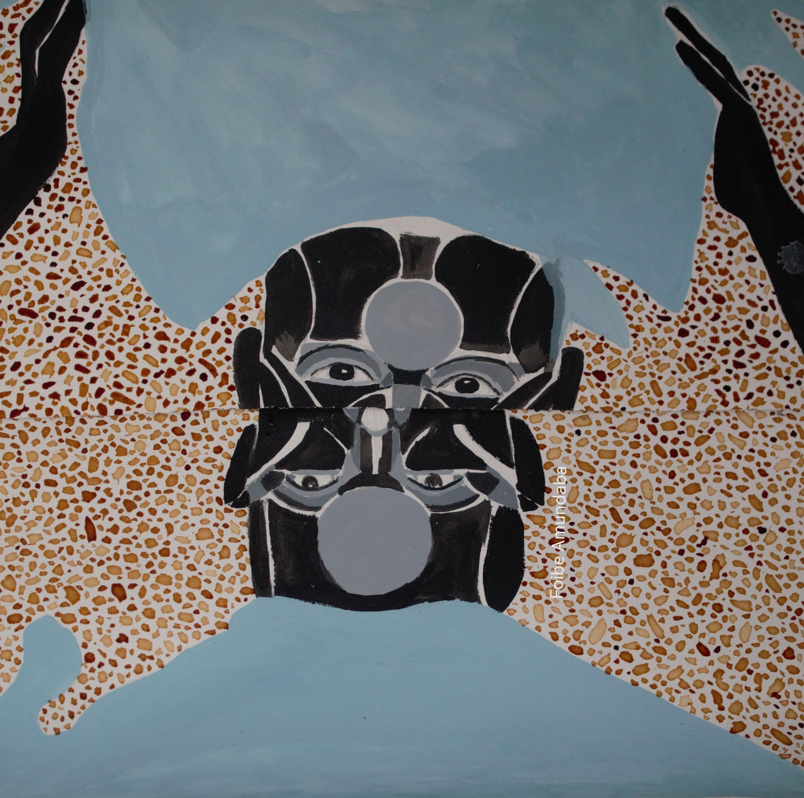

Gallery

smile
Acrylic on canvas, 2022
Identity in Motion
Mixed media, 2021
Connections
Oil on board, 2023
Tradition & Change
Textural collage, 2022
Bold, bright, and contemporary reflections on African identity
Foibe Amundaba is an Angolan-born Namibian painter whose work explores themes of identity, tradition, and the evolving roles of women in contemporary African society. She currently teaches afternoon art classes at Gymnasium Private School in Oshana.
Amundaba received her formal art education in northern Namibia before continuing her studies at the John Muafangejo Art Centre (JMAC) and the College of the Arts (COTA) in Windhoek, as well as at Spencer Street Studios in Cape Town. Her multidisciplinary training informs a visual language that blends abstraction with symbolic and textural references to African cultural aesthetics.
Her debut solo exhibition, A Line of Stories (2012), held at the Franco-Namibian Cultural Centre in Windhoek, established her as a distinctive voice in Namibian contemporary art. Amundaba’s abstract compositions are inspired by the strength and resilience of African women, incorporating motifs drawn from nature, traditional crafts, and the rhythms of everyday life.
Amundaba has participated in group exhibitions across Namibia, South Africa, Europe, and Japan, and has exhibited with the NJE Collective at the Johannesburg Art Fair and the Cape Town Investec Art Fair.
Acrylic on canvas, 2022
Mixed media, 2021
Oil on board, 2023
Textural collage, 2022